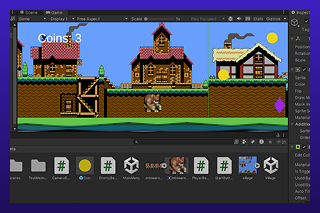

Calling of the Werewolf
{kind=link}
Description
- The this game is a small 2d platformer level made in unity. It was a project for my Game development class at ISU. The player must collect 10 coins and kill 5 enemies and then make it to the end goal in order to beat the game. Basic story of the game would be the player protecting the village from monsters.
Skills
- The game is programmed in C# and uses collection mechanics as it's main function. I have a understanding of the basics and fundamentals of C#. These skills were learned from my Game development class at ISU.
Lost space

Description
- Lost space is a 3d platformer where the player shoots enemies,collect health orbs if needed, and platform across to the door that leads to level 2. Level 2 would consist of the player collecting parts and interacting with other game objects as a way to "repair" broken machines.
Skills
-I used
Combat Space Concept

Description
- Lost space is a 3d platformer where the player shoots enemies,collect health orbs if needed, and platform across to the door that leads to level 2. Level 2 would consist of the player collecting parts and interacting with other game objects as a way to "repair" broken machines.
Skills
-I used